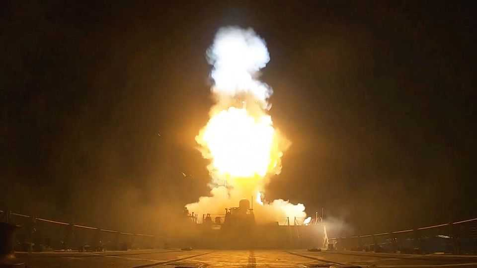
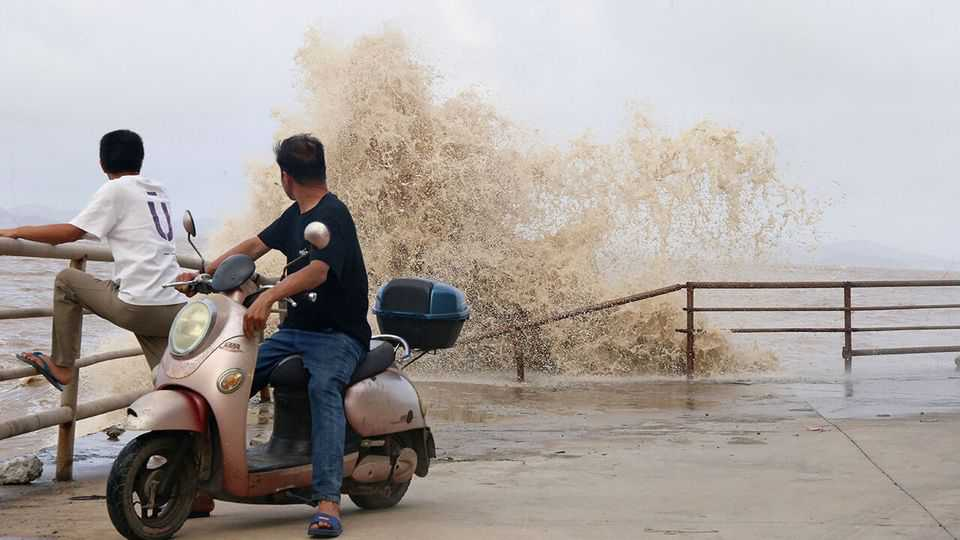

Politics
July 16th 2026

The ceasefire between America and Iran all but collapsed, after Donald Trump reinstated a blockade of Iranian vessels in the Strait of Hormuz and ordered fresh strikes to degrade Iran’s ability to attack commercial shipping. Iran continued to target countries in the region, including Kuwait and Jordan, and struck two United Arab Emirates’ oil tankers with cruise missiles. America hit a tanker heading towards Kharg island, Iran’s oil-export hub. Mr Trump raised, and then quickly backed down from, the possibility of America charging a 20% fee on ships that traverse the strait. Oil prices jumped.
Iraq’s new prime minister, Ali al-Zaidi, visited the White House. Mr Trump was effusive in his praise, describing Mr al-Zaidi as a “great leader”. The president had in effect blocked the return of Nouri al-Maliki as prime minister, viewing him as too close to Iran. Iraq’s new leader is under intense pressure to disarm Iranian-aligned militias that have launched attacks on American facilities.
Israel’s general election is to be held on October 27th. Binyamin Netanyahu’s government will have served a full term when the Knesset is dissolved on July 17th.
Oxford University launched the first trial of a vaccine against the strain of Ebola that has broken out in the Democratic Republic of Congo. Nearly 800 people have died and over 2,000 are infected. Scientists think that the current outbreak could be worse than the one that killed more than 11,000 people in west Africa ten years ago, unless there is an improvement in efforts to combat the disease.
Lindsey Graham, a senior American senator from South Carolina, died unexpectedly at the age of 71. He had just returned from Ukraine and was pushing a bill to widen sanctions against Russia. Mr Trump described Mr Graham as a “great politician”, though the senator opposed Mr Trump’s first run for president, becoming a steadfast ally only after his victory. Mr Graham also supported Israel’s war aims and advocated for a tough stand against Iran.
A suspect was arrested in the murder of Ann Widdecombe, a former MP and Conservative government minister in Britain who switched to the populist-right Reform UK and was its justice spokeswoman. Ms Widdecombe, a devout Christian who converted to Catholicism and fiercely resisted the transgender movement, was found dead at her home. Reform called for better security protection for MPs after a man was arrested for threatening on social media to shoot its leader, Nigel Farage.
Andy Burnham easily secured the support of enough Labour MPs to become the party’s new leader, ensuring that he will take over from Sir Keir Starmer. Sir Keir took his last prime minister’s questions in the House of Commons. “I am proud of everything that we have achieved,” said the man with the worst satisfaction ratings ever recorded for a British prime minister.
El Salvador’s president, Nayib Bukele, was nominated by his New Ideas party to run for a third term at next year’s election. When Mr Bukele was first elected in 2019 presidents were limited to one term. But in 2021 the country’s top court ruled that he could run a second time. Last year the legislative assembly passed a constitutional amendment scrapping term limits for the presidency altogether and extending the term in office from five years to six. Some observers fear that El Salvador is slipping back to the old Latin American model of one-man rule.
The death toll from two recent earthquakes in Venezuela approached 5,000. The government is in discussions with the IMF about tapping its special drawing rights at the fund for humanitarian uses.
At least 32 people died when a fire engulfed a bar in Bangkok. Survivors described how they encountered locked doors and poor signage when they tried to escape the inferno.
More violent clashes broke out in Pakistan-administered Kashmir over seats in the local assembly that are reserved for refugees who live in other parts of Pakistan. A grassroots organisation, the Joint Action Committee, has been banned for stirring the protests; it claims the reserved seats weaken local representation. Nine people were killed in the recent trouble. Around 30 have died over the past few weeks.

Almost 2m people were evacuated in China from the path of Typhoon Bavi, a gigantic storm that spanned 1,000km (620 miles) at its widest point. Bavi made landfall at Taizhou, around 300km south of Shanghai, before turning on Wenzhou, which is a little farther south.
Volodymyr Zelensky shook up his cabinet, which resulted in Yuliia Svyrydenko stepping down as prime minister after just a year in the job. “Ukraine is changing its political strategy,” said Mr Zelensky. Mykhailo Fedorov, the defence minister who is widely credited with Ukraine’s successful use of new wartime technology, was also ousted after clashing with generals. Meanwhile, Russia attacked Kyiv with another heavy bombardment, its fifth this month.
Lithuania’s ruling coalition approved Mindaugas Sinkevicius as the new prime minister. The coalition in parliament voted for his manifesto, which includes keeping spending on defence to at least 5% of GDP and an aim to keep American troops in the country for the long term. Although Russia is suffering heavy losses in Ukraine, it would be a mistake to think its “military threat is subsiding”, said Mr Sinkevicius.
The Hungarian parliament, now with the centrists holding a supermajority after April’s election, passed a constitutional amendment that would remove Tamas Sulyok from the presidency and Peter Polt as head of the Constitutional Court. Peter Magyar, the new prime minister, said both men had put their loyalty to Viktor Orban, the previous right-wing prime minister, above the interests of Hungary.
Border controls between Gibraltar, a British overseas territory, and Spain were abolished. Checks had been administered on people crossing to and from Spain, and thus the European Union, but during the Brexit negotiations with Britain the EU insisted on allowing free movement. Spaniards and Gibraltarians can now cross their border with ease. But as Gibraltar is now in effect part of the EU’s Schengen free-movement area, non-Gibraltarians will have to endure the EU’s new and technically challenged electronic border system at the airport.